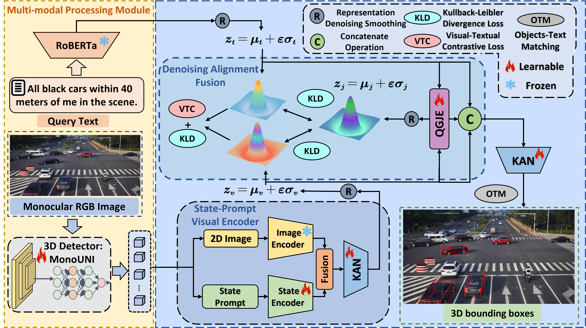

Beyond Human Perception: Understanding Multi-Object World
from Monocular View


Abstract
Language and binocular vision play a crucial role in human understanding of the world. Advancements in artificial intelligence have also made it possible for machines to develop 3D perception capabilities essential for high-level scene understanding. However, only monocular cameras are often available in practice due to cost and space constraints. Enabling machines to achieve accurate 3D understanding from a monocular view is practical but presents significant challenges. We introduce MonoMulti-3DVG, a novel task aimed at achieving multi-object 3D Visual Grounding (3DVG) based on monocular RGB images, allowing machines to better understand and interact with the 3D world. To this end, we construct a large-scale benchmark dataset, MonoMulti3D-ROPE, and propose a model, CyclopsNet that integrates a State-Prompt Visual Encoder (SPVE) module with a Denoising Alignment Fusion (DAF) module to achieve robust multi-modal semantic alignment and fusion. This leads to more stable and robust multi-modal joint representations for downstream tasks. Experimental results show that our method significantly outperforms existing techniques on the MonoMulti3D-ROPE dataset.
Framework
The multi-modal processing module first obtains text features and all 3D objects. Then we obtain our state-prompt visual embeddings by passing the 2D image and state prompt through the State-Prompt Visual Encoder (SPVE). By modeling the textual and visual embeddings as Gaussian distributions and converging them pairwise with the multi-modal representations from the Query-Guided Joint Embedding (QGJE) module, we obtain robust and comprehensive multi-modal representations. Finally, the Kolmogorov-Arnold Network (KAN) is supervised by the Object-Text Matching (OTM) task to predict how well the object matches the query text.
 Code &
Dataset
Code &
Dataset


 Experiments
Experiments